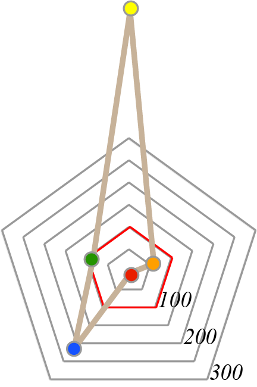

| 30,1-40,0 | |
| 40,1-50,0 | |
| 50,1-60,0 | |
| 60,1-70,0 | |
| 70,1-80,0 |
| * показники рівня забезпеченості АР Крим, Донецької та Луганської обл., м. Севастополя подано за 2012 р. |
|  | середнє в Україні значення становить 100% (позначене червоним контуром); показники, які є меншими за середнє значення, розміщуються всередині червого контура, інші - поза його межами |
| ** аналітичні індекси АР Крим, Донецької та Луганської обл., м. Севастополя розраховано на основі даних за 2012 р. |
| нововиданими книгами і брошурами, примірників | |
| бібліотечним фондом, примірників | |
| місцями у клубних закладах, од. | |
| місцями у театрах, од. | |
| музеями, од. |
| Примітка. Аналітичний індекс - це відхилення відповідного показника в регіоні від його середнього значення в Україні |
| Відповідно до варіативності показників аналітичних індексів ресурсного потенціалу окремих складових сфери культури та мистецтва регіони України поділено на типи: |
| 1 тип: варіативність аналітичних індексів незначна; |
| 2 тип: варіативність аналітичних індексів незначна, один-два індекси помітно більші за середнє в Україні значення; |
| 3 тип: лише один з аналітичних індексів менший за середнє в Україні значення, декілька індексів є помітно більшими; |
| 4 тип: один з аналітичних індексів значно більший за середнє в Україні значення |